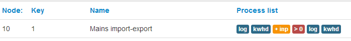

Now emoncms v8.0 has been merged into master, I've updated my system this morning, which went OK, but the input processes are not displayed. For example;
Here is part of my input page, note the 6 processes acting upon the input.

...Then if I select the corresponding 'process' spanner from that page, I get;
.png)
...which is blank & no actions available from the dropdowns.
However, the 6 processes are still running OK and updating, just not visible to add to, or amend them.
Paul
Re: v8.0 input processes not working - RESOLVED
Wow Thanks Paul for testing it so quickly! Does clearing the browser cache sort it?
Re: v8.0 input processes not working - RESOLVED
Paul, I had the same issue with just one input on emoncms.org, Everything is working just the process list isn't populated. If you try and add another process that won't display either and you can't delete them if you cannot see them. I had to use the "Reset input process list" url from input API help and then add the processes again using all same inputs and feeds, all data was retained as well.
Obviously if there is an easier fix eg a DB or index rebuild that's going to be easier but you can't resolve it any other way this will probably work, (and doesn,t take half as long as you expect because all the feednames and intervals are done.
Paul
Re: v8.0 input processes not working - RESOLVED
For others thinking of upgrading I've updated the upgrading documentation to provide what I hope is a safer upgrade procedure:
http://emoncms.org/site/docs/upgrading
Re: v8.0 input processes not working - RESOLVED
I've managed to merge this into my debian-packed version and got up to v8 just by running apt-get upgrade ;-)
There are just a few teething issues but I'd really like to get the point of a pull request on this ASAP, as it will be much kinder to everyone if they can fork from the altered directory structure of the debian-packaged version and we don't sink them halfway through!
I'll start a separate topic for this, so we don't go too far OT in this thread.
Re: v8.0 input processes not working - RESOLVED
Does clearing the browser cache sort it?
Yes it does, clearing the cache resolves the issue.
Thanks Trystan
Paul
Re: v8.0 input processes not working - RESOLVED
Note to others: I had to log out an re-login to have the Admin panel appear.